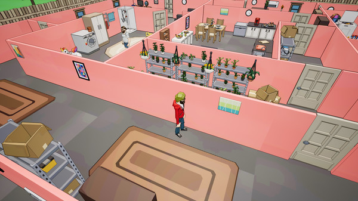
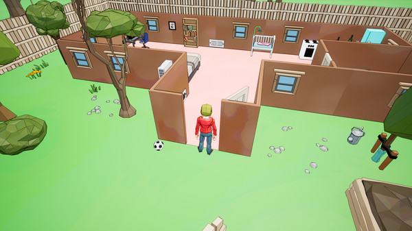
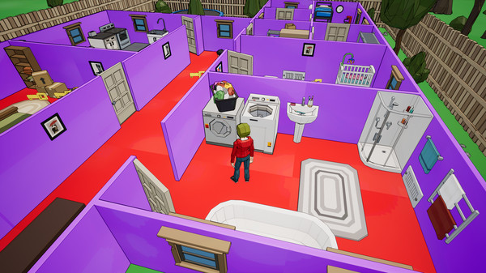

TV Thief

Любите ли вы стелс-игры с красивой графикой? Если да,
то TV Thief точно для вас!
В этой игре вам предстоит побыть вором телевизоров,
и вам нужно будет украсть все телевизоры из домов.
Сделать это вам могут помешать жильцы этого дома. Не попадитесь к ним на глаза!
В игре TV Thief вам предстоит сыграть за персонажа, который ворует телевизоры.
Вам нужно будет вынести телевизор из дома и загрузить его в свой фургон.
Украсть телевизоры будет совсем не просто, так как в домах находятся жильцы.
Если вы попадетесь к ним на глаза, то непременно поедете в тюрьму. Вынесите телевизоры без лишнего внимания!



| Минимальные | Максимальные | |
| ОС: | Windows 7 SP1 64-bit or Windows 8.1 64-bit or Windows 10 64-bit | Windows 7 SP1 64-bit or Windows 8.1 64-bit or Windows 10 64-bit |
| Процессор: | Intel Core i3 or equivalent | Intel Core i5 or equivalent |
| Видеокарта: | NVIDIA® GeForce® GTX 550 or ATI™ Radeon™ HD 6XXX or higher | NVIDIA GeForce GTX 770 or AMD R9 280 |
| DirectX: | Версии 11 | Версии 11 |
| Место на диске: | 320 MB | 320 MB |